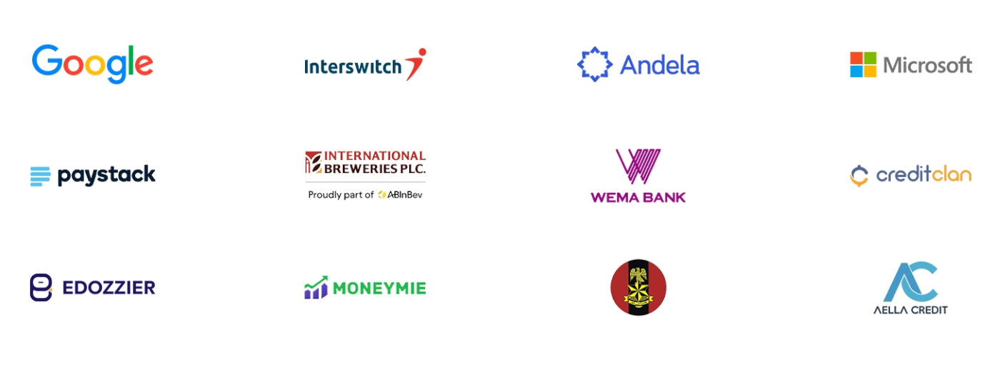

Study to become a global talent
Learn new tech skills using a world-class curriculum from top industry experts in an accredited institution.

Learn new tech skills using a world-class curriculum from top industry experts in an accredited institution.

The National Diploma (ND) offered at SQI College of ICT is a 2 year approved academic program of the National Board for Technical Education (NBTE) and approved by the Federal Ministry of Education

The Professional Certificate Program is 1 year practical training with wide range of edge-cutting IT certification courses offered in SQI College of ICT to people who want to advance their career.

The Certificate Program is a short-term training, 2 weeks to 6 months with a wide range of edge-cutting IT certification courses offered in SQI College of ICT to people who want to advance their careers.
Duration:2 Years
Certificate:Both National and Professional Diploma
Skills:Academic Institution recognized skills and in-demand professional skills
Entr Requirements:120 min in JAMB, 5 Credits in O-Level and your passion
Required Hardware:(usually Laptop)
Direct Entry:Yes (Any University)
Transcript & Internship:Yes
Access to Alumni Network and Opportunities:Yes
Duration:12 Months Courses
Certificate:Professional Diploma
Skills:In-demand professional skills
Entry Requirements:Your passion
Required Hardware:(usually Laptop)
Transcript & Internship:Yes
Access to Alumni Network and Opportunities:Yes
Access to Credit Unit for Universities
Duration:2 Weeks to 10 Months
Certificate:Certificate Program
Skills:In-demand professional skills
Entry Requirements:Your passion
Required Hardware:(usually Laptop)
Transcript & Internship:No
Access to Alumni Network and Opportunities:Yes

Software Engineering is one of the most in-demand jobs across the globe today.
Software Engineers are also known as programmers, developers or coders. They are the ones behind all the apps and software you use today either on your ….
Learn More
More than ever before individuals and businesses are relying on digital products and services. From online meeting tools to finance, from e-commerce platforms to healthcare and food apps.
Making an intuitive digital product design is even more import at this time as it…
Learn More
The eruption of data is transforming indiviuals and businesses. Companies either big or small are now expecting their business decisions to be based on data-led insight.
Data specialists have a tremendous impact on…
Learn More
This course is designed to prepare you for success in a modern world full of computers—not only the traditional computers such as desktop and notebook PCs but also computers that you interact with in other places too, like your bank’s ATM or your employer’s computerized cash register.
in this course, you will learn about the technologies that drive our computerized society…
Learn More
Our campus is a living centre for innovation and creativity for sustainability. We love showing students our campus and allowing them to see, hear and feel the excitement that comes with being part of the Central community which is an atmosphere that is open-minded, always exciting, and filled with academic excellence.
Read what our current students and alumni have to say about their SQI
experience.

4.9
Based on 84 reviews
powered by

Coming to SQI has made me believe that life has more to offer.Talking about being experienced in ICT rapidly, SQI deserves uncountable recommendations.Thank u SQI for making me believe more in myself, thanks for bringing out some qualities that I'll never think of years to come in my life.My heart is full of gratitude

It is a great place to learn. It is a condusive environment filled with loving and patient teachers,a wonderful and admirable manager and supportive and cheerful students. For the past month have been here, it's been great

It's an awesome place to learn. It has a serene environment, the tutors are friendly and very explanatory. I really love the place

say do not give a level of quality even close to it... Some platforms charge a lot more and yet still falter in the delivery of good contents... Another aspect that I noticed in comparison is that instructors at SQI College of ICT are actually interested in ensuring their students understand what they are learning. They take joy in ensuring the students comprehend and are able to apply what is being taught and explain in the simplest ways possible to ensure maximum comprehension....I'm not sharing this because I have any affiliation with SQI College of ICT, I'm doing so because it's simply the truth. If anyone else tries to make their research, they will find out that it's true too.

SQI is one of the things I’m thankful for in my life. I’ve spent six months in SQI and I can say it’s one of the best moments in my life. The staffs are accommodating and very excellent at their job. The tutors don’t just teach, they mentor students. They make coding fun and understandable for learners. I’m able to achieve a lot enrolling with them. I’ve been able to build amazing web projects under their tutelage. ENROLL WITH SQI AND YOU WILL BE PROUD YOU DID.
Our courses are practical, hands-on learning. Practice and apply knowledge with real world projects that contribute largely to your portfolio.
Get to interact with different mentors and draw from their loads of experience.
You can now choose physical class experience or online classroom and learn from anywhere in the world.
You will have access to our fully functional hub for co-working and working on projects, assignments and even begin a start-up.
Be certified by an accredited and globally recognized institution. SQI got its accreditation in Sept 2021 from the NBTE, Nigeria.
Our students have access to alumni who currently work at top tech organizations in the world such as Google, Microsoft, Interswitch etc.
78.5% of our students found secure employment within three months of graduation. Students leave from learning to getting job roles
Students have access to prerecorded videos and resources they can make use of to further solidify their knowledge.

We currently have 3 modes of study at SQI College of ICT, the National Diploma, Professional Diploma Certificate, and Ordinary Professional Certificate Program. You can join us by applying through any of the modes of study.
We provide and lead others in quality education, service, industry, and character as well as discipline.
Join any of our Campuses:

Dreaming of a future in tech? SQI College of ICT is now accepting applications for its 2026/2027 Post-UTME and Direct Entry screening with opportunities open to candidates who scored 100 and above, including those changing institutions via Joint Admissions and Matriculation Board…

SQI College of ICT is pleased to formally announce a strategic academic collaboration with Ladoke Akintola University of Technology (LAUTECH) for the support and coordination of selected LAUTECH Part-Time Degree Programmes.This collaboration will operate at: SQI...

SQI College of ICT, Ogbomoso, marked a landmark achievement on Saturday, 22nd November 2025, as the institution held its maiden Convocation Ceremony at its main campus along Old Ilorin Road, Ogbomoso. The event, which drew dignitaries from across Nigeria’s academic...
We provide and lead others in quality ICT education.
Send us a mail
enquiry@sqi.edu.ng
admissions@sqi.edu.ng
examsandrecords@sqi.edu.ng
rector@sqi.edu.ng
partnerships@sqi.edu.ng
internships@sqi.edu.ng
Application Portal
Student Portal
Professional Courses
ND Courses
Campus Info
Accommodation
SQI Scholarship
SQI Anthem
Donate
Old Ilorin Road,Opposite Yoaco Filling Station,Yoaco, Ogbomoso.
0906 281 9991, 0906 281 9993
Locate on the map
Suite 219, Opic Plaza, Mobolaji Bank Anthony Way, beside Sheraton Hotel, Ikeja, Lagos
0906 281 9999
Locate on the map
Available Globally Online
0906 281 9992
Locate on the map
First Floor, H25 Heritage Mall,Opposite Central Bank of Nigeria,Dugbe, Ibadan.
0906 281 9994
Locate on the map
Christianah Oyinade Ajoke House, beside First Bank, Arisekola Central Mosque, Opposite Jaiz bank, Idi Ape, Iwo road, Ibadan.
0906 281 9995
Locate on the map
Haier Thermocool Building, opposite SAO filling station, Challenge, Ibadan, Oyo State.
0906 281 9992
Locate on the map
First floor, OPIC Tower building, Okeilewo, Abeokuta.
0906 281 9996
Locate on the map
Opposite Jaiz bank, Ogo-Oluwa, Osogbo
0906 281 9997
Locate on the map
Suite Banking Hall SF, Febson Mall,Wuse Zone 4, Abuja
090 628 200000
Locate on the map